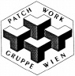
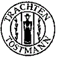

Patchwork-Gruppe Wien
Siehe: www.patchworkgruppewien.at

Die Patchwork-Gruppe Wien wurde im Anschluss an die in Salzburg abgehaltene erste Quilt-Expo Europa im Juni 1988 gegründet. Seit September 1990 ist sie ein eingetragener gemeinnütziger Verein. Der Vereinszweck ist die Förderung der Textilkunst „Patchwork und Quilten“ in Österreich.
Zur Erreichung dieses Zieles setzen wir folgende Aktivitäten:
- Eigene Austellungen
- Abhalten von Workshops
- Blockverlosungen
- Jährlicher Challenge
- Exkursionen
- Präsentation unserer Gemeinschaftsquilts in anderen Ausstellungen
Wir treffen uns jeweils am 3. Mittwoch im Monat.
Für weitere Informationen wenden Sie sich bitte an die Obfrau:
Lilo Wesely
Vorgartenstraße 132/106
A-1020 Wien
Für Ihre Anfrage oder Nachricht bitte an: patchfan@aon.at

Die Patchwork-Gruppe Wien wird seit vielen Jahren von Frau Dr. Gexi Tostmann, der Inhaberin des bekannten Trachtenmoden- und Stoffgeschäftes Trachten Tostmann in der Schottengasse im 1. Wiener Gemeindebezirk, durch die Bereitstellung eines Raumes für unsere Treffen sowie Stoffspenden etc. unterstützt. Dafür sei ihr auch an dieser Stelle herzlich gedankt.